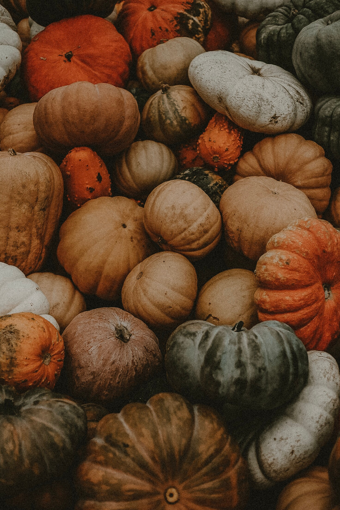
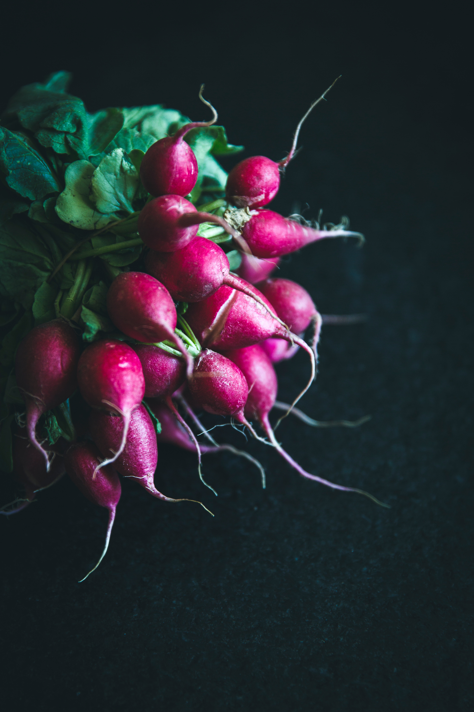

Vamos falar de hortaliças
Hortaliças referem-se à plantas herbáceas que integram uma ou mais partes consumíveis, sendo geralmente cultivadas em hortas. As hortaliças podem ser subdivididas nos seguintes grupos:
- Legumes
Caracterizam-se como aqueles em que a parte comestível da planta são os frutos ou as sementes, como o feijão, o arroz e a laranja.

- Verduras
São aquelas em que a parte comestível da planta são as folhas, flores ou hastes, como a alface, o agrião, o repolho e a couve.

- Raízes
Dizem respeito aos alimentos cuja parte comestível é subterrânea, servindo como exemplo as cenouras, a beterraba e o gengibre.

Importante!
O consumo de hortaliças é indispensável na alimentação dos seres humanos, pois são alimentos reguladores que tem como características serem fontes de vitaminas, minerais, nutrientes que mantém o equilíbrio do organismo e ajudam para seu pleno funcionamento.